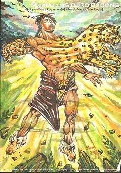

Mon nom est NTSAME MINTO'O Valène-Lauhys,étudiante à l'Université Omar Bongo.
S'il faut que je décrive ma personne, je dirais que je suis une personne curieuse, assez objective,
fonceuse,battante,assez exigeante surtout en ce qui concerne le travail.
observatrice,j'apprends assez vite et très souriante,j'aime le travail d'équipe,
et je sais etre une source de motivation pour les autres.
Une vidéo,pour vous aider à voir plus clair.
Mes passions tournent autour du sport, la cuisine,la musique..
Ainsi en parlant de musique, je vous laisse savourer cette note musicale
Il peut m'arriver parfois de vouloir ressembler à un super héros, ce dernier n'est nul autre que Ze MEDANG

Formation
De 2001-2005, j'ai effectué mon premier cycle au collège Louis Bigman d'Angondjé. Durant ce parcours, j'ai obtenu mon Brevet d'Etude du Premier Cycle.
De 2006-2009, j'ai effectué mon second cycle au Lycée d'Etat Nguema Bekale d'Oyem. Là-bas, j'ai obtenu mon Baccalauréat.
En 2015, j'ai obtenu une Licence en Littérature et Civilisation Britannique à l'Université Omar Bongo.
Expériences Professionnelles
S'agissant de mon expérience dans le monde du travail, ma liste n'est pas très exhaustive. Alors, de 2014-2015, j'ai travaillé pour une petite entreprise qui fait dans l'assistance aéroportuaire.Le nom de cette entreprise est EAAA Gabon.
Mon role à moi était d'assister les clients en les accueillant dès leurs arrivées de l'intérieur ou de l'extérieur du pays. Je devais payer leurs frais de visas s'ils en avaient pas,leurs trouver un hébergement si cela était nécessaire
et faciliter leurs departs vers l'intérieur ou l'extérieur du pays.
De 2015-2016, j'ai continué la meme expérience, mais cette fois ci au sein d'une autre entreprise.
Celle-ci fait également dans l'assistance aéroportuaire, cette entreprise s'appelle Rada Services.